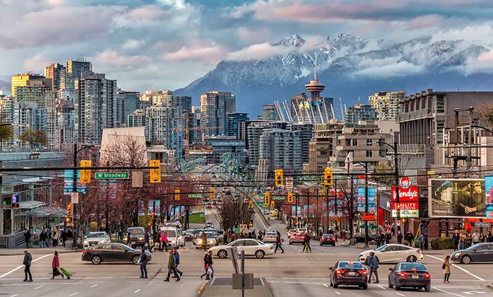

Walking Through Vancouver
“Granville Island is a peninsula and shopping district in Vancouver, British Columbia, Canada. It is located across False Creek from Downtown Vancouver under the south end of the Granville Street Bridge. The peninsula was once an industrial manufacturing area, but today it is a hotspot for Vancouver tourism and entertainment “ “The Granville Island Public Market was established in 1979 as a location where farmers and other food vendors could sell to consumers. It operates year-round in an enclosed facility where customers can purchase fresh produce, meat, fish and seafood, cheeses and other products, many locally sourced.” Take an adventure through the city to see all of the culturally diverse shops, museums, and resturants. Travel by train and boat to the Sunshine Coast!